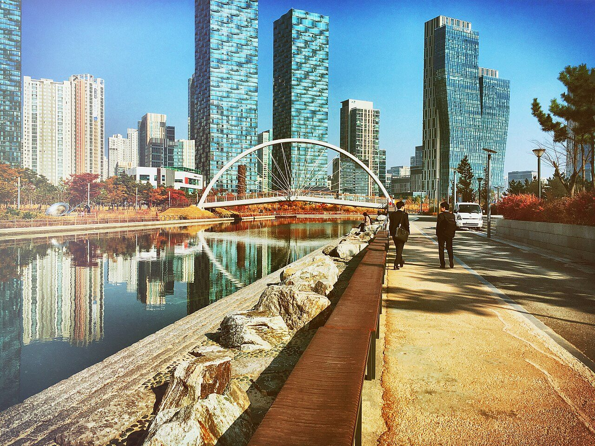
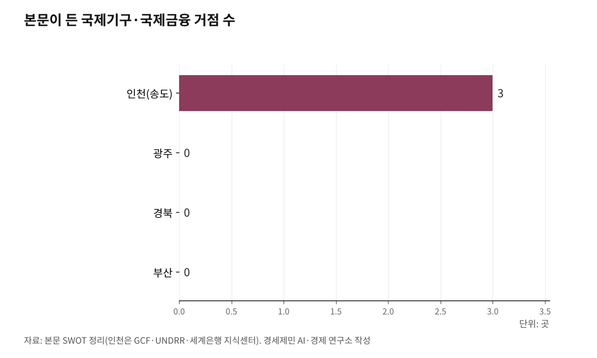

UN AI 허브 4개 도시 SWOT… 승부는 국제기구 운영 경험
인천 국제기구 12년 운영이 강점, 개최지 그침이 과제
경쟁 3도시 공통 약점은 '국제기구 운영 경험 부재'
UN 글로벌 AI 허브 입지 선정이 다가온다. 이 허브는 AI 규칙과 표준을 세우고 개도국을 돕는 국제 협력체이지, 거대 데이터센터가 아니다. 그래서 잣대는 데이터센터 자산이 아니라 국제기구를 다뤄본 역량과 국제 정주여건이다. 인천·광주·경북·부산을 이 기준으로 짚는다.

1. 인천, 국제기구 운영 경험
인천의 강점은 국제기구를 12년 운영한 경험이다. 2012년 독일 본을 제치고 녹색기후기금(GCF)을 유치해 특별법·본부협정과 면세·외교특권·비자 체계를 갖췄다. GCF는 253건, 530억 달러를 승인하며 12년 운영 역량을 쌓았다(2024.4 기준). 송도에는 GCF와 유엔재난위험경감사무국(UNDRR)이 자리했고, 세계은행은 2025년 12월 지식센터를 해외 첫 사례로 열었다(2025.12 기준). 6개 의제가 제조업·인천공항·송도 바이오·인천항 현장에 닿는 점도 강점이다. 특히 인천공항이라는 세계적 관문과 수도권 접근성은 대표단이 오가는 국제기구에 결정적 이점이다.
약점은 GCF 12년의 한계다. 국제기구를 운영하고도 지역 산업 연계나 한국인 고위직 배출로는 이어지지 못했다는 지적이 있다. 기회는 입지 선정 임박과 박찬대 시장·정부 유치위의 추진력, AI·기후·재난 융합 수요다. 위협은 경쟁 도시와 지역 안배, 총리 교체기의 중앙 동력 변동이다.

2. 광주, 민주 명분과 국제기구 공백
광주의 강점은 5·18에 뿌리를 둔 민주·인권 명분과 AI 실증 기반이다. 2019년부터 'AI 중심도시 광주' 1단계로 국가AI데이터센터를 구축했다.
다만 국가AI데이터센터는 연산 자산이라 규범 기구엔 부차다. 약점은 국제기구 운영 경험이 없고, 국제 접근성과 정주여건이 약하다는 점이다. 2조5000억원 규모 국가AI컴퓨팅센터도 전남 해남에 내줬다(2025년 기준). 기회는 개도국 AI 규범 교육과 글로벌 사우스 포용 명분이다. 위협은 국제기구 경험 부재와 인프라 중심 흐름이다.
3. 경북, 외교 상징과 국제기구 공백
경북의 강점은 2025년 APEC을 연 경주의 외교 상징성과 포스텍 연구역량, 구미·경산 산업기반이다.
약점은 국제기구 운영 경험 부재와 수도권·국제공항 접근성, 인구소멸이다. 기회는 균형발전과 지방분산 명분, 위협은 국제기구가 접근성을 중시하는 관행이다.
4. 부산, 초연결과 국제기구 공백
부산의 강점은 제2도시의 국제 접근성과 정주여건, 가덕도신공항이다. 국제 왕래와 외국인 정주에서 인천 다음으로 유리하다.
약점은 국제기구 운영 경험이 없고, 규범·정책 인력 기반이 약하다는 점이다. 기회는 기회발전특구와 국제 접근성 개선, 위협은 인천·경북과의 정면 경쟁이다.
네 도시를 규범 기구 잣대로 놓으면 갈림이 분명하다. 세 경쟁 도시의 공통 약점은 국제기구를 운영해본 적이 없고, 국제 접근성도 인천에 못 미친다는 것이다. 규칙을 정하는 자리는 시설이 아니라 사람과 접근성, 신뢰로 돌아간다. 인천은 그 경험과 국제기구 클러스터를 가졌다. 잣대를 바로 놓으면 승부처가 보인다.
참고문헌
· 「글로벌 AI 허브 입지 선정 시동… 전국 지자체 유치 경쟁 본격화」, 전자신문, 2026.6.30., https://www.etnews.com
· 「'글로벌 AI 허브', 왜 세계가 주목하는가」(허브 기능·성격), 미래한국, 2026., https://www.futurekorea.co.kr
· 「국가AI컴퓨팅센터 유치, 광주 왜 실패했나」(2조5000억원·해남 확정), 광주드림, 2025.10., https://www.gjdream.com
· 「경북연구원, 'UN AI 허브' 유치 공식 제안」(경주·포항 투트랙 제안), BBS 불교방송, 2026.4., https://news.bbsi.co.kr
· 「부산연구원 "UN 인공지능 허브 유치 최적지는 부산"」, 뉴시스, 2026.6.8., https://www.newsis.com
· 「세계은행 글로벌 지식센터 한국에 개소」, 대한민국 정책브리핑, 2025.12., https://www.korea.kr
※ 이 칼럼은 AI 프로그램 클로드를 활용해 작성했습니다.
사진 출처
· [대표사진] Hon Kim honn2, "송도동, Incheon, South Korea (Unsplash).jpg", 위키미디어 공용, CC0, https://commons.wikimedia.org/wiki/File:%EC%86%A1%EB%8F%84%EB%8F%99,_Incheon,_South_Korea_(Unsplash).jpg
※ 이 기사는 인공지능을 활용해 작성했습니다.
관련기사
- UN AI 허브는 거대 데이터센터 아닌 'AI규범 UN기구'… 국제기구 클러스터 인천이 최적지
- 짓는 도시 아닌 운영하는 도시… 인천의 UN AI 허브 승부수
- UN AI 허브, 인천 제조업 25만에 '국제 노동기준' 연다
- 국제기구 도시 송도, UN AI 허브 최적지… 박찬대 앞장서
저작권자 © AI경세제민 무단전재 및 재배포, AI학습 및 활용 금지